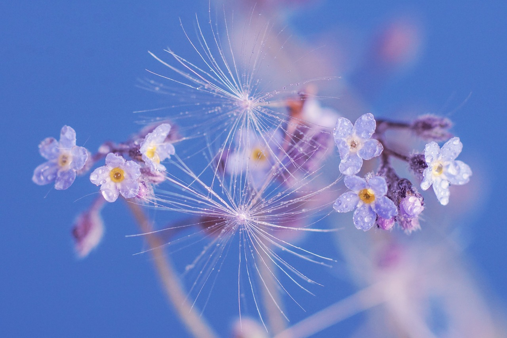

Historia "GRUNI", to Jej karty CHWAŁY w historii ŚWIATA!!


"GRUNIA" jest firmą rodzinną od zawsze, ale nad datą Jej powstania, spuśćmy litościwie zasłonę milczenia. Ginie ona bowiem w dziejowej pomroce i daty tej nie pamiętają nawet najstarsi górale, do których zwracaliśmy się w tej sprawie. Atoli jeden z nich wspomniał o zasłyszanym, ustnym przekazie, jakoby już w czasach księcia MieszkaI, zwrot ten zafunkcjonował wśród wojów i gminu. Według relacji owego górala, jednym z ulubionych giermków na książęcym dworze, był niejaki Jaśko Grun z lennej wsi Grunawa. Dalej ów ustny przekaz głosił, że po weselnej uczcie z księżniczką Dobrawą i tęgim nadużyciu pędzonego miodu, czkając książę zwrócił się był do Jaśka w te, oto, słowa (cytat za góralem): "Grun, ieauchhha!!, a pójdź ino, ihh!!, a obacz, azali Niemce już nas poniechali?!". A ponieważ książę pan - po stracie w karczmie przednich siekaczy w trakcie ożywionego dyskursu politycznego - seplenił i znaki interpunkcyjne miał za nic, Jaśko Grun zyskał ksywkę "Grunia" od bełkotliwej zbitki słownej najjaśniejszego. Ksywkę tę, Jaśko z dumą obnaszał i troskliwie hołubił. A My owego Jaśka, za założyciela tej Firmy, z przekonaniem, uznajemy!! Zawżdy czasy minione, sprzyjały rozwojowi różnych form turystyki krajoznawczej, tedy i "GRUNIA" odgrywała w każdej z nich, wiodącą rolę. Jednak sam Jaśko "Grunia" Grun, podwaliny przyszłej renomy Firmy, kłaść zdążył zaledwie w początkowym okresie Jej istnienia. (Acz podobno zawsze żałował, że nie dane mu było organizować wycieczek turystyki kwalifikowanej Dżengis-chanowi, czy Atylli!). Zwiastunem nadchodzących sukcesów "GRUNI", stała się nowatorska forma organizacji i realizacji czterech turystycznych wycieczek morsko-lądowych z wieloletnim programem zwiedzania Jerozolimy, Konstantynopola i ziem tych regionów. W archiwach nadal przechowujemy dokumenty imprez w - spłowiałych ze starości! - teczkach pn. "Wyprawy Krzyżowe". Renomę Biura, gruntowały też sukcesy profesjonalnie przygotowanych wycieczek Marca Polo i jego znajomych. Olbrzymim zaś osiągnięciem "GRUNI", było - wzorcowo logistycznie opracowane i zrealizowane! - wielkie spotkanie integracyjne pod Grunwaldem. Spotkanie to, zasłużenie głośnym echem odbiło się w całej Europie i ówczesnym świecie. Bez "GRUNI" nie byłoby także takich innowacyjnych filarów turystyki, jak piesze "Wędrówki Ludów", wymiany kulturowe w ramach cyklu "Wiosna Ludów", czy wciąż cieszący się ogromnym powodzeniem i nadal rozwijany program "Za Chlebem". To "GRUNIA" urządziła też Schlimannowi wakacyjną piaskownicę, w której ten ongiś nudząc się i bawiąc łopatką, Troję był wykopał. Wreszcie korzystając z własnego banku poufnych informacji, "GRUNIA" ujawniała liczne miejsca ukrycia artefaktów starożytności w Dolinie Królów i wskazała kopiec, będący grobowcem pierwszego cesarza Chin - Shi Huangdi. Jednak za swój sztandarowy sukces, "GRUNIA" uznaje bezbłędnie zorganizowaną i zrealizowaną, ośmiodniową, dziewiczą wyprawę eksploracyjną na Księżyc dla NASA. To My też wskazaliśmy dokładne współrzędne miejsca, w którym Armstrong zatknął był wtedy flagę. Gdy po powrocie przybyli z podziękowaniami, to nie wiedzieli wprost w co Nas z wdzięczności całować. Szczęśliwie dla wizerunku NASA, przytrzymaliśmy się wówczas krzeseł!Oczywiście i "GRUNI" zdarzały się potknięcia. Ukrywać ich nie zamierzmy, bo stanowią - liczony zaledwie w promilach!! - element ryzyka prowadzonej działalności. Za "czarną plamę" na gwieździstym niebie sukcesów "GRUNI", uważamy zrealizowaną Kolumbowi, morską, rekreacyjną wyprawę do Indii. Niestety, ciężki atak choroby morskiej, wyeliminował - całkowitą niedyspozycją! - przydzielonego wyprawie, Naszego etatowego przewodnika. Wynikiem tych fatalnych zbiegów okoliczności, było kompletne zagubienie się Kolumba w wód otchłani, skutkujące pomyłką co do osiągniętego celu. Nie uchylaliśmy się jednakże od profesjonalnej odpowiedzialności i w ramach rekompensaty, natychmiast opracowaliśmy uczestnikom wycieczki, wieloletni program zajęć kulturalno-rekreacyjnych na tych ziemiach. (Kolumb też zresztą później, inaczej oceniał skutki Naszego pecha, gdy posiadanymi wpływami, wyjednaliśmy mu tytuł Wicekróla Indii Zachodnich!). Z tej oczywistej wpadki, wyciągnęliśmy jednak wnioski i kolejna wycieczka morska do Indii dla Vasco da Gamy i grupy jego przyjaciół, zakończyła się już Naszym spektakularnym sukcesem!! Czujemy się również częściowo odpowiedzialni za skutki realizacji pełnomorskiego rejsu wycieczkowego statkiem RMS "Titanic". Niestety, w tamtym czasie byliśmy zaangażowani w tak wiele przedsięwzięć biznesowych, że w całkowicie wypełnionym kalendarzu zleceń, nie znaleźliśmy już żadnych wolnych terminów. Oczywiście, skorzystała z tego konkurencja, przejmując to zlecenie. Ale wszyscy wiemy, czym się zakończyło owo nieprofesjonalne gmeranie w turystyce!!
Jak z tego - z konieczności pobieżnego jedynie! - przeglądu dokonań widać, "GRUNIA" była i jest zawsze tam, gdzie dzieje się coś godnego uwagi. CIEBIE więc także w tych miejscach, zabraknąć nie może!!

